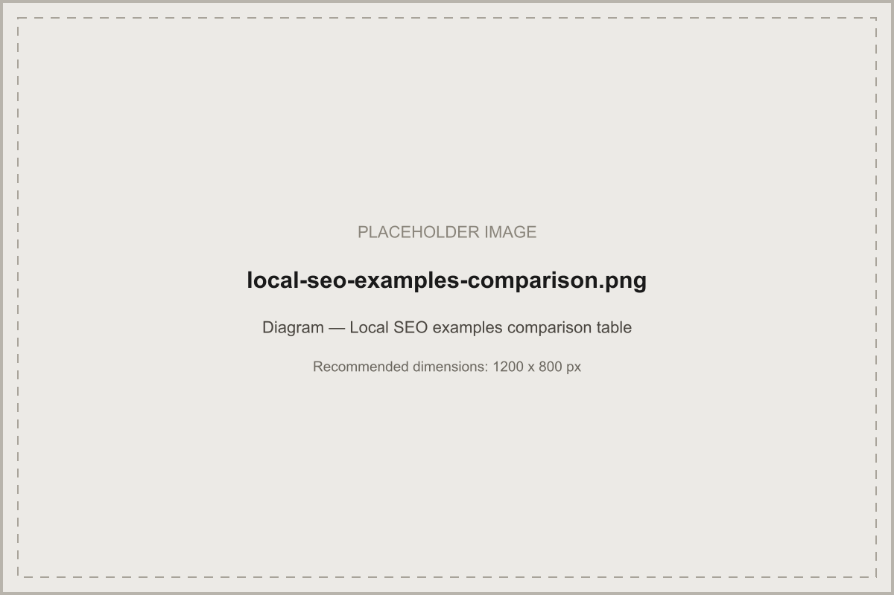

Ten illustrative examples — not case studies — showing how local SEO priorities genuinely differ by business type.
In short: local SEO priorities differ meaningfully by business type — a dental clinic's biggest lever is often review trust signals, while a service-area removal company's is precise service-area definition in Google Business Profile. Every example below is clearly labelled Illustrative example — none is a real client result or case study.
Score your business in 5 minutes — see exactly where you stand and what to fix first.
Illustrative examples — every business situation below is a composite, general illustration built to show how local SEO principles apply differently by business type. None represents a real Acendia client, campaign, or outcome. For verified results, see our case studies page.
| Situation | Emergency and scheduled plumbing across several suburbs |
| Search intent | High urgency for "emergency plumber near me"; more research-driven for installations |
| Keyword structure | Service + suburb combinations, split by urgency (emergency vs. scheduled) |
| GBP priorities | 24/7 hours accuracy, emergency service attribute, fast review response |
| Recommended pages | Dedicated emergency-plumbing page; separate installation/maintenance pages per major suburb |
| Local content | "What to do before the plumber arrives" style guides; seasonal content (burst pipes in winter) |
| Citation opportunities | Trade association directories, local home-services directories |
| Review strategy | Request immediately after job completion, while urgency and relief are still fresh |
| Internal linking | Emergency page linked prominently from homepage and every suburb page |
| Conversion path | Click-to-call prioritised over forms, given urgency |
| KPIs | Call volume and Local Pack visibility for emergency terms |
| Situation | Residential and light commercial electrical work |
| Search intent | Mixed urgency and considered-purchase (rewiring, EV chargers) |
| Keyword structure | Service + suburb, plus emerging terms like "EV charger installation [city]" |
| GBP priorities | Accurate licensing/certification attributes where supported, service list completeness |
| Recommended pages | Service-specific pages (rewiring, EV chargers, fault-finding) rather than one generic page |
| Local content | Safety-focused guides, cost-factor explainers |
| Citation opportunities | Trade licensing bodies, local trade directories |
| Review strategy | Structured request post-job with a direct review link |
| Internal linking | Service pages cross-linked to related services (e.g. rewiring ↔ safety inspections) |
| Conversion path | Quote request form for considered work; call for urgent faults |
| KPIs | Quote requests and calls by service type |
| Situation | Repairs and full replacements across a regional service area |
| Search intent | Storm-driven urgency spikes alongside planned replacement research |
| Keyword structure | "Roof repair [city]" alongside "roof replacement cost [city]" |
| GBP priorities | Before/after photo uploads, insurance-claim assistance attribute if applicable |
| Recommended pages | Separate repair vs. replacement pages, tiered by highest-demand towns |
| Local content | Storm-damage guides tied to real regional weather patterns |
| Citation opportunities | Roofing trade associations, home-improvement directories |
| Review strategy | Photo-supported reviews highlighting completed work |
| Internal linking | Regional page rolling up smaller towns, linking out to individually tiered ones |
| Conversion path | Free inspection/quote request as the primary CTA |
| KPIs | Quote requests by town, seasonal spike responsiveness |
| Situation | Single-location general and cosmetic dentistry |
| Search intent | Trust-driven — "dentist near me," "best dentist [suburb]" |
| Keyword structure | Service + suburb ("emergency dentist," "teeth whitening [suburb]") |
| GBP priorities | Review volume and rating are the single biggest trust lever |
| Recommended pages | Service pages for major treatment categories, plus a strong "meet the team" page |
| Local content | Patient-education content (not testimonials framed as clinical claims) |
| Citation opportunities | Dental and healthcare directories |
| Review strategy | Consistent post-appointment requests; fast, professional responses to any negative reviews |
| Internal linking | Service pages linked from a central "treatments" hub |
| Conversion path | Online booking widget prioritised over a plain contact form |
| KPIs | Booking conversions, review volume and rating trend |
| Situation | Regional firm covering several practice areas |
| Search intent | High-consideration, research-heavy before contact |
| Keyword structure | Practice area + location ("family lawyer [city]"), kept distinct per practice area |
| GBP priorities | Accurate categories per practice area if multiple profiles are appropriate; otherwise a strong core listing |
| Recommended pages | One dedicated page per practice area, not one generic "legal services" page |
| Local content | Genuinely useful explainer content demonstrating real expertise, not generic legal-blog filler |
| Citation opportunities | Legal directories and bar association listings |
| Review strategy | Sensitive, compliant review requests respecting client confidentiality |
| Internal linking | Practice-area pages cross-linked where cases genuinely overlap |
| Conversion path | Confidential consultation request form |
| KPIs | Qualified consultation requests by practice area |
| Situation | Small-business-focused accounting practice |
| Search intent | Considered, often seasonal (tax deadlines) research |
| Keyword structure | Niche + location ("small business accountant [city]") — see the practical example in our UK ranking guide |
| GBP priorities | Service list completeness, professional accreditation attributes where supported |
| Recommended pages | Niche-specific pages (small business, sole trader, industry-specific) rather than one generic accounting page |
| Local content | Deadline reminders, plain-English explainer content |
| Citation opportunities | Accounting body directories, chamber of commerce listings |
| Review strategy | Post-engagement requests, particularly after a positive tax-season outcome |
| Internal linking | Niche pages linked from a central services hub |
| Conversion path | Free consultation booking |
| KPIs | Consultation bookings by niche/service page |
| Situation | Residential removals across a wide regional service area, no public storefront |
| Search intent | Planned, comparison-driven ("removalists [city] cost") |
| Keyword structure | Service + route where relevant ("[city] to [city] removalists") |
| GBP priorities | Service-area business setup — hidden address, precisely defined coverage |
| Recommended pages | Regional coverage page naming served towns explicitly, plus a pricing-factors page |
| Local content | Moving-day checklists, packing guides |
| Citation opportunities | Moving and logistics directories |
| Review strategy | Requested immediately post-move while experience is fresh |
| Internal linking | Coverage page linked from every service page |
| Conversion path | Instant quote form |
| KPIs | Quote requests by route/region |
| Situation | Residential sales and property management across several suburbs |
| Search intent | Mixed — buyers, sellers, and landlords, each with different intent |
| Keyword structure | Suburb + intent ("sell my house [suburb]," "property management [suburb]") |
| GBP priorities | Regular listing-related posts, agent-level reviews aggregated to the business profile where platform rules allow |
| Recommended pages | Suburb-specific market pages, separate from individual listing pages |
| Local content | Local market updates, suburb guides |
| Citation opportunities | Real estate directories and portals |
| Review strategy | Requested at settlement, from both buyers and sellers |
| Internal linking | Suburb pages linked from a central "areas we serve" hub |
| Conversion path | Free appraisal request |
| KPIs | Appraisal requests by suburb |
| Situation | A retail or service brand with several physical locations |
| Search intent | Location-specific, "[brand] [suburb]" or "[service] near [suburb]" |
| Keyword structure | One page per location, never a shared generic "locations" page |
| GBP priorities | A separate, fully maintained profile per location — no duplicate or abandoned listings |
| Recommended pages | Individually optimised location pages, per the multi-location guidance in our local SEO strategy guide |
| Local content | Location-specific news, staff, and community involvement |
| Citation opportunities | Consistent NAP across every location-specific citation |
| Review strategy | Location-level review tracking, not a single blended average |
| Internal linking | Central locations hub linking to and from every individual page |
| Conversion path | Location-specific contact details and directions on every page |
| KPIs | Rankings and enquiries tracked per location, never blended |
| Situation | A mobile or home-based service business with no address to publicly display |
| Search intent | "[service] near me" and defined service-area terms |
| Keyword structure | Service + each genuinely served town or suburb, never a padded list of unserved areas |
| GBP priorities | Address hidden, service area precisely defined — see the GBP optimisation section of our strategy guide |
| Recommended pages | A clear "areas we serve" page plus service pages, without implying a physical premises |
| Local content | Content addressing genuinely local considerations relevant to the service |
| Citation opportunities | Directories that support service-area listings without requiring a public address |
| Review strategy | Standard post-job request sequence |
| Internal linking | Service-area page linked prominently from the homepage |
| Conversion path | Clear service-area confirmation before the enquiry form to filter out-of-area leads early |
| KPIs | Qualified enquiries confirmed within the actual service area |

No. Every example on this page is clearly labelled as an illustrative example, built to show how local SEO principles apply to different business types. None represents a specific Acendia client, campaign, or outcome.
Because local SEO priorities genuinely differ by business type. A dental clinic's local SEO looks different from a service-area removal company's, even though both are "local SEO" — this page shows those practical differences side by side rather than treating local SEO as one-size-fits-all.
Yes — see our case studies page for verified client results where available. This page is intentionally separate and clearly labelled as illustrative, so the two are never confused with one another.
Score your business in 5 minutes — see exactly where you stand and what to fix first.
Get a free local SEO audit and see exactly which of these priorities matter most for you.
Get My Free SEO Audit →
The framework behind every example above.

Score your own business against this same framework.

Prioritised, practical recommendations for any business type.

Verified results, where available.
Written and reviewed by the Acendia International Editorial Team, part of Acendia International, an SEO agency working with businesses across the United Kingdom. See our editorial approach for how we research, write, and review our guides. Published 4 August 2026. Last updated 4 August 2026.
Book a free strategy call and get a plan built for your actual business type and market.